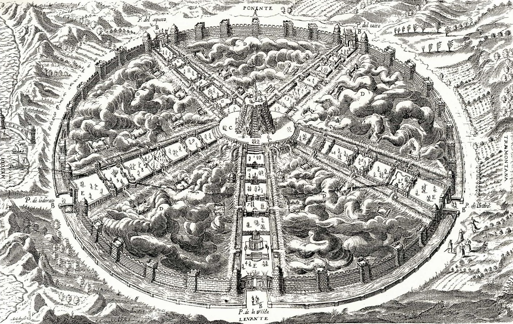
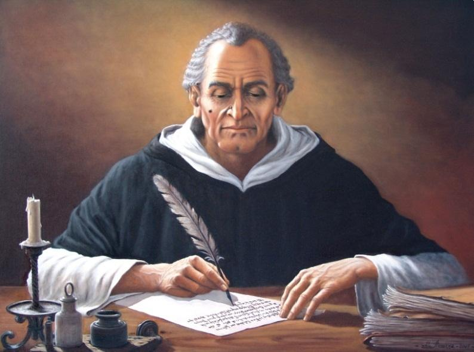

Воспитание и образование
Воспитание детей в этом обществе на себя полностью берет государство. Во время обучения детей разделяют на отряды, как и взрослых во время работы. С восьми лет они начинают изучать естественные науки,
затем переходят к ремеслам. Менее способные отправляются в деревню, при этом у них есть шанс вернуться в город, если они все-таки себя проявят. После окончания обучения гражданин считается готовым к получению должности. В какой отрасли
он лучше себя проявил, решают наставники.

Система наказаний
В этом обществе, в котором упразднены семья, свобода творчества и труда, собственность, находится место нарушениям закона. Кампанелла подробно описывает систему наказаний. Преступлением считается злоба,
неблагодарность, отказ в должном уважении, уныние, лень, шутовство, ложь. В наказание виновные лишаются общения с женщинами или общей трапезы. Содомия наказывается обязанностью носить постыдную одежду, а при повторном преступлении
нарушителя ждет смертная казнь. Судебная власть в городе при этом объединена с административной.
В идеальном государстве Кампанеллы отсутствуют палачи и надзиратели. Смертная казнь осуществляется народными руками, то есть виновного побивают камнями. Вообще, наказания считаются одним из элементов воспитания жителей.

Религия
В Городе исповедуется религия Солнца. В этом веровании можно выделить два аспекта. В основе государственная религия, так как управление Городом совпадает со священным служением. В то же время религия Солнца в изложении
Кампанеллы предстает как поклонение Вселенной. Ее воспринимают как самый идеальный и рациональный механизм, который только может существовать. По сути, это соединение рационалистической науки и религии с уклоном в астрологию.
Центральное место в Городе занимает храм Солнца.
Похороны
Примечательно, что в идеальном обществе Кампанеллы тела умерших не хоронят. Во избежание моровых болезней и эпидемий их сжигают. При этом именно огонь сравнивается с живой и благородной стихией, которая "к солнцу
исходит и к нему возвращается". Таким образом, как отмечает автор, исключается культ идолопоклонства.
Итог
Основные идеи Кампанеллы в "Городе Солнца" изложены вполне ясно. Это его представление об идеальном мире, идеальном обществе, которое он стремился построить. При этом некоторые моменты вызывали неприятие у современников.
В утопии Т. Кампанеллы "Город Солнца" ощущается влияние на автора трудов Томаса Мора и Платона, при этом произведение выделяется своим астрологическим контекстом. Интересно, что среди коммунистов и социал-демократов произведение снова
стало популярным в середине XIX века.